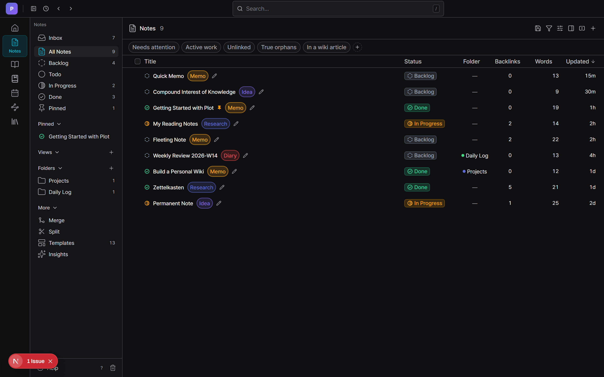
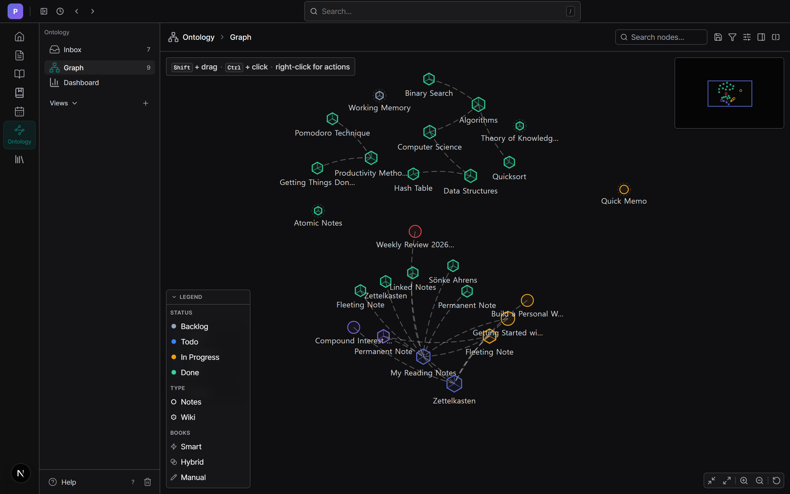

기본은 잔잔하게, 필요할 땐 강력하게.
Plot은 노트, 개인 위키, 포스 기반 지식 그래프를 하나로 묶은 로컬 퍼스트 앱입니다. 겉은 애플 노트, 속은 제텔카스텐 — 당신의 사고를 위한 팔란티어 × 제텔카스텐.

당신은 노트만 씁니다. 제텔카스텐은 Plot이 대신합니다 — 연결하고, 고아 노트를 찾아내고, 자랄수록 더 유용해지는 그래프를 키웁니다.
복리처럼 — 노트 10개일 땐 연결할 게 별로 없지만, 100개가 되면 새 노트마다 기존 여러 개와 이어집니다. 시스템이 복리로 불어납니다.
아래 기능은 전부 지금 앱에 들어 있습니다 — 로드맵이 아니라 소스로 검증된 것들.
단순 백링크 패널이 아닙니다 — 포스 기반 그래프에 계산된 지표까지: Knowledge WAR, 2홉 Concept Reach, 클러스터 응집도, 고아 비율. 노트가 박스스코어를 받습니다.
노트는 원재료, 위키 문서는 컴파일된 결과물입니다 — 인포박스·내비박스·백과사전식 레이아웃까지. Plot이 빽빽하게 잘 연결된 노트를 위키로 키우라고 권합니다.
4단계 상태(대기 → 준비 → 정리 중 → 완성)와 5단계 우선순위를 노트·위키·북에 똑같이 적용합니다. 지식을 위한 리니어급 프로젝트 흐름.
스티커는 어떤 엔티티든 함께 묶습니다. 북은 엔티티를 넘나드는 순서 있는 읽기 시퀀스입니다. 카테고리는 다중 부모 DAG를 이룹니다. 단일 부모 페이지나 평면 태그를 한참 넘어섭니다.
리스트·보드·그리드·타임라인 — 약 25가지 그룹화, 3단계 다중 정렬, 그룹 접기 유지, 저장된 뷰, 승격 가능한 필터 칩까지. 태스크 DB가 아니라 모든 엔티티에서.
리마인더, 간격 반복 복습, 위키 레드링크, 미연결 멘션 알림, 본문 태스크, 코멘트, 그래프 정비 제안 — 하나의 미루기/지우기 큐로 모입니다.
모든 데이터는 당신 기기의 IndexedDB에 있습니다. 백엔드도, 계정도, 텔레메트리도 없습니다. 전체 JSON 백업, 마크다운 내보내기, 암호 서명된 자동 업데이트.
모든 노트와 위키 문서의 진짜 포스 기반 그래프 — 위키링크·태그·관계가 엣지가 됩니다. 확대하고, 격리하고, 볼록 껍질로 묶으세요. 그리고 Plot이 세이버메트리션처럼 점수를 매깁니다.

같은 4단계 스펙트럼이 노트·위키·북을 움직입니다 — 어디에 있든 ‘상태는 상태’.
포착된, 날것의, 미가공 — 당신 마음의 인박스.
발전시킬 계획. 손볼 가치가 있다고 아는 것.
한창 다듬고, 연결하고, 정제하는 중.
결정화됨 — 연결할 준비가 된 영구 노트.
Plot에는 백엔드도, 클라우드도, 계정도 없습니다. 노트·위키 블록·첨부·그래프까지 전체 지식 베이스가 당신 기기의 IndexedDB에 있습니다. 진짜로 소유하는 로컬 퍼스트 앱.
한 명의 개발자가 약 6개월 동안 완성도에 집착하며 작업했습니다.
Windows 10/11 · v0.1.2 · 약 6.6 MB 설치파일
Plot은 현재 무서명 배포라 Windows SmartScreen 경고가 뜰 수 있습니다 — 추가 정보 → 실행 클릭. macOS·클라우드 싱크·모바일은 로드맵 단계로 아직 출시 전입니다.